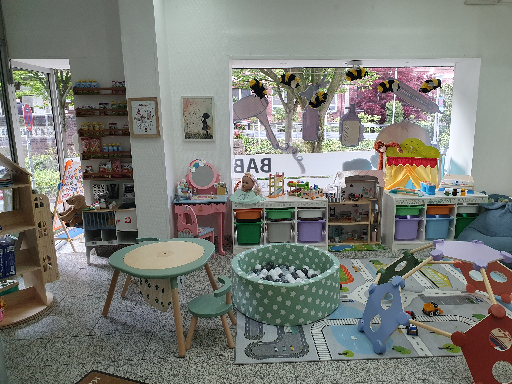
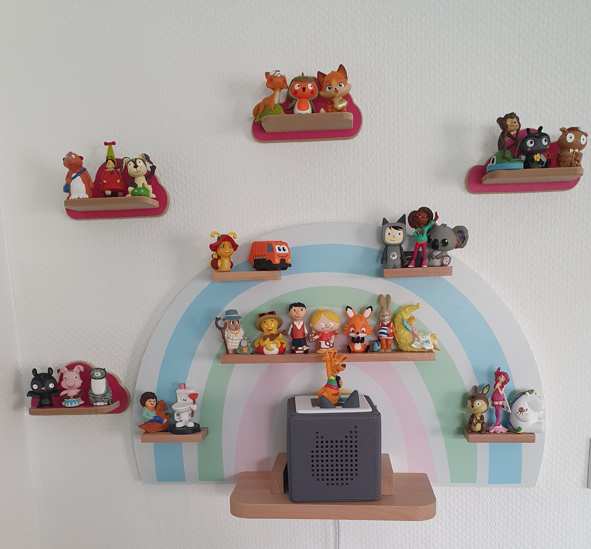
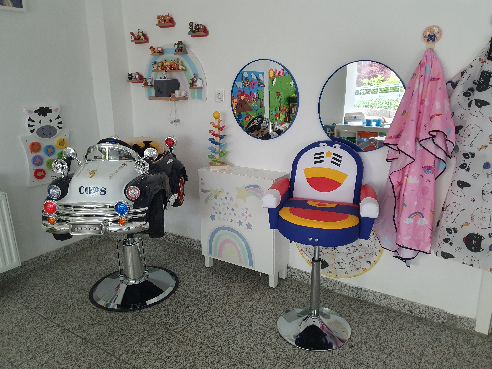
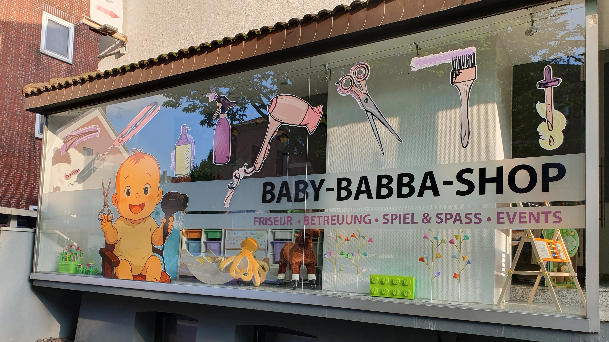
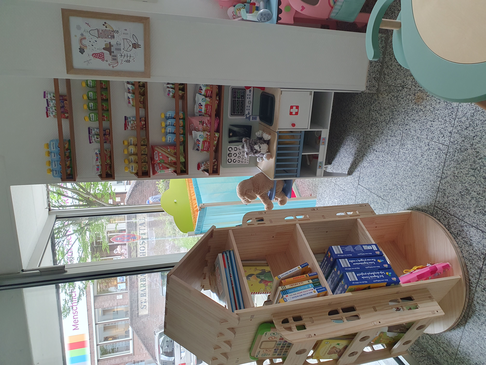

Bei uns im Friseursalon Baby-Babbashop legen wir großen Wert auf eine freundliche und entspannte Atmosphäre für die ganze Familie. Wir wissen, wie herausfordernd es sein kann, mit kleinen Kindern zum Friseur zu kommen. Deshalb bieten wir eine Vielzahl an Annehmlichkeiten und Services, um den Aufenthalt für Eltern und Kinder gleichermaßen angenehm zu gestalten.
Während sich die Eltern bei uns die Haare schneiden lassen, können die Kinder in einem sicheren und betreuten Bereich spielen. Unsere Betreuung ist liebevoll und professionell, sodass sich Eltern keine Sorgen machen müssen. Wir bieten eine gemütliche Umgebung mit Tonies und Geschichtenboxen, damit die Kinder spannende Abenteuer erleben können – immer unter Aufsicht und in einer sicheren Umgebung.
Unsere Kinderbetreuung ist nicht nur sicher, sondern auch auf die Bedürfnisse der Kinder abgestimmt. Dank unseres Überwachungssystems können die Eltern jederzeit sicher sein, dass ihr Kind gut betreut wird. Die Kinder können in unserem Spielbereich spielen, sich mit Tonie-Figuren und Geschichten beschäftigen, und sogar ihre ersten Friseur-Erfahrungen sammeln. All das geschieht in einer entspannten Atmosphäre, die für die Kleinen zu einem besonderen Erlebnis wird.
Auch für die Kleinsten haben wir ein spezielles Angebot: Friseurgewöhnung! Kinder, die noch nie beim Friseur waren oder Angst davor haben, können bei uns in einer entspannten und freundlichen Umgebung ihre ersten Friseur-Erfahrungen sammeln. Mit liebevoller Betreuung und passenden Aktivitäten bieten wir den kleinen Gästen die perfekte Möglichkeit, sich mit dem Friseur-Besuch vertraut zu machen.
Direkt gegenüber unseres Salons befindet sich das Krankenhaus – und manchmal braucht man einfach 45 Minuten, um jemanden zu besuchen oder etwas zu erledigen. In solchen Fällen bieten wir eine kurzfristige, liebevolle Kinderbetreuung bei uns im Salon an. Die Betreuung ist zeitlich begrenzt und kostet eine kleine Gebühr. Bitte sprechen Sie uns vorab an – wir kümmern uns gerne um Ihr Kind, während Sie sich kurz um anderes kümmern.
Zusätzlich bieten wir viele weitere Angebote für die Kleinen:
Vorlese-Nachmittage – Mit Snacks und spannenden Geschichten
Fussmassage mit Schuhberatung – Für die kleinen Füße
Kinderspaß und Betreuung – Je Stunde für nur 15,00€
Planen Sie einen entspannten Friseurbesuch? Wir betreuen Ihr Kind währenddessen liebevoll und sorgen dafür, dass es sich in unserem Spielbereich bestens amüsiert. Ob beim Friseur oder bei einem Arztbesuch – während Sie sich entspannen können, kümmern wir uns um Ihre Kleinen.
Vertrauen Sie uns: Ihr Kind ist bei uns in besten Händen!